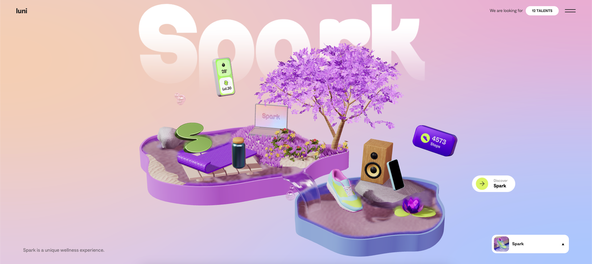

A1: Interactive Experience
Research Project
Interactive Media (OART1013)
Mintera van der Wiel (S3897922)

luni.app
link to website
₁. What was the first thing you paid attention to when interacting with
the experience?
The first thing I noticed when opening the Luni website was the 3D
Modelling and interactive elements. The way that the design moves along
with the cursor motions gives the website more dimension, which I found
more appealing rather than the usual flat coloured website designs.
₂. Spend two minutes with the experience and create a list of each of your
discrete actions.
✩ Hovering over the 3D items to show interactivity options.
✩ Hovering over 3D items to try and find the small clickable interactive
items on each page.
✩ Scrolling to reveal texts and 2D as well as moving images.
✩ Scrolling up to move onto the next page.
✩ Discovering 3 different ways to view pages on the website: main menu,
sidebar and scroll.
₃. What part of the experience did you spend the most time engaging with?
I spent most of the time engaging with the websites 3D interactive
elements. The inclusion of this made the website feel almost like a game,
adding a fun aspect to viewing their app branding. It was enjoyable to
hover over every small element to find which one would be animated upon
clicking.
₄. What was the most common action in your two minute interaction with the
experience?
The most common actions when interacting with this website would be
scrolling and clicking. This website seems to be most commonly viewed by
scrolling up to reveal a new page as well as revealing text information
about their apps. As usual websites are, clicking on elements to reveal
new pages was also a common interaction.
₅. What is your impression of the intended primary goal of the interactive
experience?
I believe the common goal of this website was to offer a fun and visual
interactivity to accompany their branding/app promotion for sports,
running/walking and sports fans. They have taken advantage of the 3D
modelling aspect and turned it into an entertaining visual representation
of what each app is specifically catered for.
₆. How does the interactive experience communicate this primary goal?
This interactive experience communicates it’s primary goal by using bright
visuals and colours to provide fun interactivity whilst reading about the
intended goals of these fitness/sports apps. By making this website
‘game-like’ it brings users to asses the specific items shown on the page
such as the soccer ball, which then correlates to their promotion of a
sports fan app.
₇. What is your impression of how the experience should be interacted with
over time? (For how long and how many different times)
I feel as if this experience should be interacted with over the course of
10 minutes once or twice. This being because the navigable 3D elements can
be clicked upon first use which will encourage the user to seek for more,
only after finding all these elements there isn’t anything else to look
for. The text elements can be read over but I wouldn’t see the user
re-visiting to read these paragraphs more than twice.
₈. How does the interactive experience communicate how it should be
interacted with over time?
The experience is limited in what elements can be interacted with,
therefore it doesn’t suggest use over a long period of time. As most of
the website contains singular animations, it is that they are used more to
communicate the idea of their app designs rather than to be constantly
interacted with.
₉. What other media forms (digital or otherwise) does the experience
reference?
As mentioned earlier, this experience is drawn from a video-game-like
experience by using 3D modelled objects similarly to how actual video
games would produce them. The way that text paragraphs are revealed upon
scrolling also gives a video game feeling, however I can also interpret
this as promotional video editing.
₁₀. What does this reference/s communicate to you about how you should act
when engaging with your research experience?
These references convey that the interactive experience should be played
around with such as clicking elements to reveal a small animation. These
mimic video games as well as 3D video, where scrolling has a large role in
guiding the user experience throughout the website.
₁₁. What does this reference/s communicate to you about how you should
feel when engaging with your research experience?
By incorporating 3D model interactions, the website enhances engagement
for the user and creates an enjoyable experience. These give the user a
sense of what each page has to offer regarding the app (for example, the
‘Omada’ app screen containing visuals of three different sports and player
scores).
₁₂. What is the most frustrating part of the interaction to you and what
makes that part frustrating?
The most frustrating part of this interaction would be the limited
interaction with 3D elements. Although enjoyable I believe that if they
add interaction to almost every element on the page, it would have created
an environment that is made for a longer interaction period. Therefore
making it more encouraging to learn about their applications.
₁₃. What is the most satisfying part of the interaction to you and what
makes that part satisfying?
The most satisfying part of this interaction would be the repetitive
animations within each page, by using animation they have created
consistent movement which I find to be appealing to the eye as a user. As
these actions are repetitive, it creates uniformity within the page that
allows for a more memorable experience.
Contact: s3897922@student.rmit.edu.au